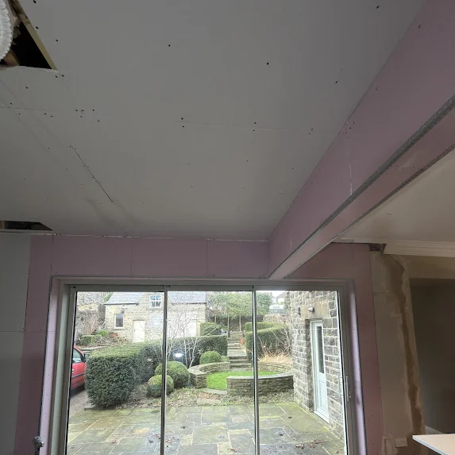
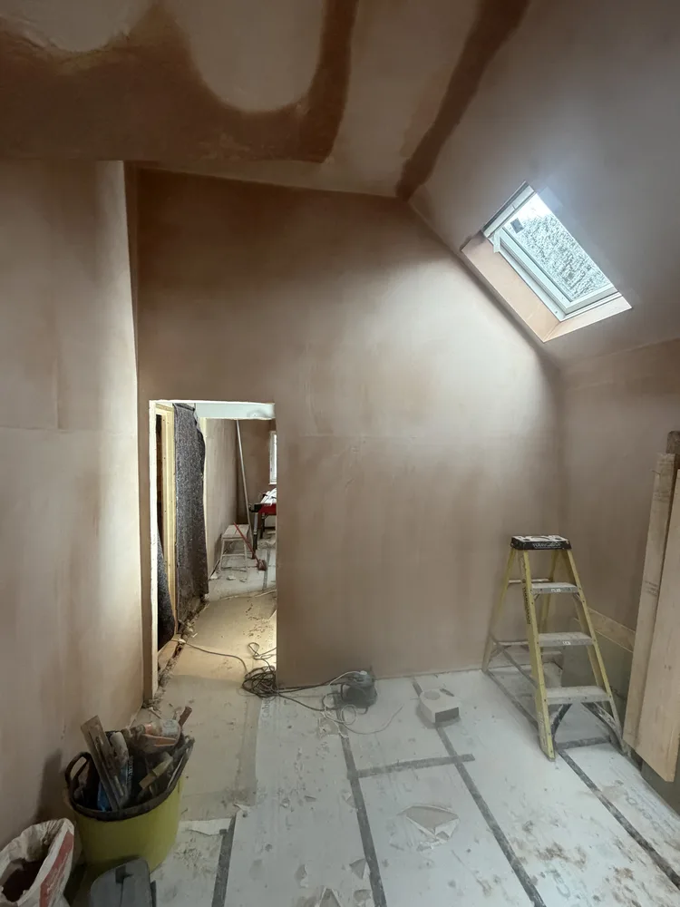
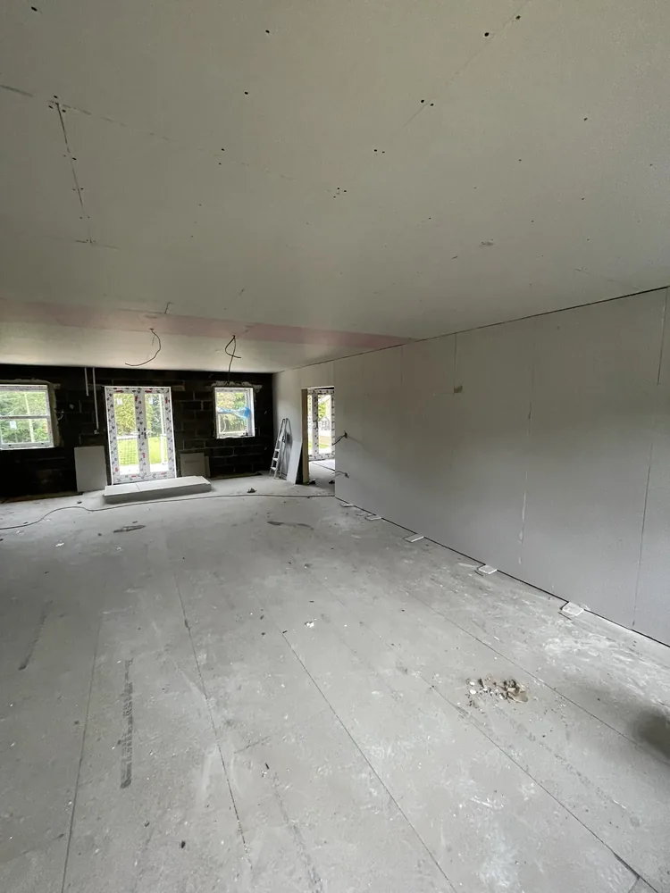

Insulated
Plasterboard
Sheffield.
Thermal boarding for cold outside walls: insulated plasterboard fixed inside, taped and skimmed. Warmer rooms, less condensation on the wall, no scaffolding. Indoor work, all winter.
Insulated plasterboard is plasterboard with a layer of rigid insulation bonded to the back. Fixed to the inside of a cold outside wall and skimmed, it slows the heat escaping through the brick and keeps the wall surface warmer, so less condensation forms on it. We fit it from £350 per room, typically £350–£800 depending on the walls. It is room-by-room, needs no scaffolding and can be done in winter. Free survey, no deposit.
Insulated Plasterboard Sheffield — Thermal Boarding for Cold Walls
P&R Solutions fits insulated plasterboard, also called thermal boarding, in homes across Sheffield, every postcode from S1 to S36. A large share of Sheffield’s houses, from Victorian terraces in Walkley and Crookes to stone-built cottages out towards Stannington and Bradfield, have solid outside walls with no cavity to fill. In winter those walls are cold to the touch, the room never quite warms up, and condensation and black mould gather in the corners.
Insulated plasterboard tackles that from the inside. The board has a layer of rigid insulation bonded to the back. We fix it to the cold outside wall, tape every joint and skim the surface, so the finished wall looks like any other plastered wall but no longer sits against cold brick.
It is the indoor alternative to external wall insulation. External insulation keeps your room sizes and covers the whole house in one go, but needs scaffolding and dry weather. Insulated plasterboard can be done one room at a time, in any weather, and costs less per room. The trade-off is that the wall comes into the room by the thickness of the board.
It is not a cure for damp. If a wall is wet from a leak, a defective gutter or rising damp, that has to be fixed first, or the board will just hide the problem. We check the walls at the survey and tell you straight if something else needs sorting before we board.
Every job is covered by our 5-year workmanship guarantee and our no-deposit policy. It is part of our dry lining work: the same crew, the same skim finish. Call 07595 399525 or request a quote online.
Cold Walls. Warm Rooms. No Scaffold.

Fulwood S10: insulated dot-and-dab dry lining and stud walls in an extension, before the skim.
Insulated plasterboard makes the biggest difference in these situations. If yours is not on the list, we will tell you at the survey.
Get a Quote ↗Houses built before the 1930s usually have solid walls with no cavity to fill, which is why they feel cold. Lining the inside of the outside walls is one of the few ways to insulate them without changing the outside of the house.
A room with one or two cold outside walls can be boarded on its own. Bedrooms, back rooms and gable-end walls are the usual ones, and the difference is felt in the first winter.
Condensation forms on the coldest surface in the room. Insulated board keeps the wall surface warmer, so less forms there. It is not a damp cure: any leak or rising damp is fixed before we board.
If the plaster on an outside wall is blown and needs stripping, boarding it with insulated plasterboard instead of re-plastering costs little extra on top of a job you are already paying for.
Stone fronts you want to keep, conservation areas, and terraces where scaffolding is difficult can all rule out external insulation. Boarding the inside leaves the outside of the house exactly as it is.
Insulated Boarding Across Sheffield & South Yorkshire.
Sheffield, S10
Insulation boards before plasterboard
Extension in S10: PIR insulation boards fitted to the sloped ceiling before plasterboarding, then the new walls boarded, taped and skimmed to match the existing rooms.
Request Similar ↗Fulwood, S10
Insulated dot-and-dab dry lining
Insulated dot-and-dab dry lining and metal stud partitions in an extension. All boards taped and jointed, scrim at every joint, then skimmed flush.
Request Similar ↗
Fulwood, S10
Skim finish over plasterboard
The finished stage: plasterboard walls and ceiling skimmed to a smooth, flat surface, ready for decorating once dry.
Request Similar ↗How We Fit Thermal Board.

A room boarded out and ready for taping and skimming.
Insulated plasterboard goes in over five stages. Most of the skill is in the preparation and the detailing around windows and sockets.
Book a Survey ↗Survey & Wall Check
We check the outside walls are dry and sound, look for the cause of any damp, measure up, and agree the board thickness and how windows, sockets and radiators will be dealt with.
Strip & Prepare
Skirting, coving and anything fixed to the wall comes off. Loose or blown plaster is removed. Sockets and radiators need taking off the wall and refitting: we tell you what needs an electrician or a plumber.
Fix the Insulated Board
Boards are bonded to the wall with adhesive (dot and dab) and mechanically fixed where needed, cut tight around windows and openings so there are no cold gaps.
Tape & Seal the Joints
Every joint and internal corner is scrim-taped and the edges sealed, so the lining works as one continuous layer.
Skim & Hand Over
A finish skim over the whole wall, worked smooth and flat. Dry in 2 to 4 days. We walk you round it before you pay. 5-year guarantee. Zero deposit.
Insulated Plasterboard Prices Sheffield.
Guide prices. Every job is quoted individually after a survey: free, itemised, no obligation.
- ✓ Insulated board
- ✓ Thermal break
- ✓ Typically £350–£800
- ✓ Skim finished
- ✓ Number of outside walls
- ✓ Windows and reveals
- ✓ Sockets and radiators
- ✓ Old plaster to strip
Free, itemised quotation — no obligation
We survey, measure and quote every room individually. Zero deposit, pay only on completion.
118 Reviews. 5.0 Stars. Every time.
“After having walls and a chimney breast removed and steels installed in our kitchen/Diner at Chapeltown and a friend of ours recommended Chris from Plaster and Rendering Sollutions for the plastering we needed. Chris went out of his way to complete the boarding and plastering to a fantastic standard so that we wouldn't be without a kitchen for too long. Chris also went out of his way to complete another room for us which needed boarding and plastering whilst we were away on holiday. We wouldn't hesitate to recommend Chris to our family and friends as his work is second to none and he is a really nice , honest person. Thank you Chris and we look forward to seeing you again for our next project. Dave & Maggie”
Dave Holmes
Boarding & plastering · Chapeltown S35
“I needed a good plasterer at short notice to board and plaster my large kitchen ceiling. Chris despite the short notice went above and beyond to help me. Within two days he had the job done resulting in a perfectly plastered ceiling which with the curved edges was a task in itself. My kitchen was left clean and tidy. Would recommend 100%.”
Alan Shepherd
Kitchen ceiling · Sheffield
Common Questions About Thermal Boarding Answered.
What Sheffield homeowners ask us about insulated plasterboard and cold walls. Click any question for the full answer.
Call 07595 399525 ↗Insulated plasterboard, or thermal board, is a sheet of plasterboard with a layer of rigid insulation bonded to the back. It is fixed to the inside of an outside wall, then taped and skimmed like any other plasterboard, so the finished wall looks the same as a normal plastered wall.
We fit insulated plasterboard from £350 per room, typically £350 to £800 depending on how many outside walls the room has, the windows and reveals, and whether old plaster needs stripping first. We give a free, itemised quote after a survey.
It is most worth it on solid brick or stone walls, which have no cavity to insulate and lose the most heat. It makes the wall warmer to the touch and the room easier to heat. If you are replastering an outside wall anyway, using insulated board instead adds relatively little to the cost.
It reduces condensation on the wall it covers, because the wall surface stays warmer and condensation forms on the coldest surface in a room. Ventilation still matters. It is not a fix for rising or penetrating damp, which has to be cured before any board goes on.
The wall comes into the room by the thickness of the board plus its fixing, a few centimetres. On a long wall it is rarely noticed, but it matters around windows, doors and fitted furniture, so we show you exactly where the new wall line will be at the survey.
External wall insulation keeps your room sizes and covers the whole house, but needs scaffolding, dry weather and changes how the outside looks. Insulated plasterboard costs less per room, can be done one room at a time in any weather, and leaves the outside untouched. We fit both, so we can advise either way.
Skirting boards, coving, curtain poles and anything fixed to the wall. Sockets, switches and radiators on the outside wall have to be moved forward and refitted, which needs an electrician and sometimes a plumber. We tell you exactly what is needed before the job is booked.
Yes. It is indoor work, so we fit it all through the winter, which is also when you notice the difference most. The skim needs some gentle heat in the room to dry, but not fan heaters blasting on it.
Get Your Free Survey Today.
We survey, measure and quote every room individually. Fully itemised. No obligation. Zero deposit: you pay only when the work is done and you are completely satisfied.
Thermal Boarding Across All of Sheffield
We fit insulated plasterboard throughout Sheffield, every postcode from S1 to S36. No call-out charge, no travel premium. Same crew, same finish standard.
More From P&R Solutions
One company covering every plastering and rendering service across Sheffield — one standard, one guarantee, one call.